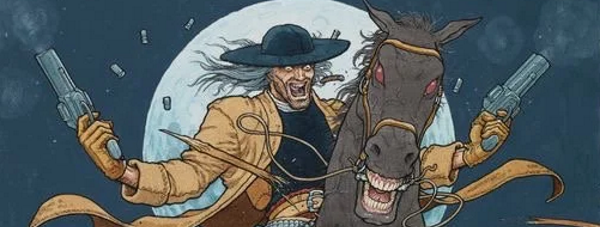

Preacher Cain (a cross between Kwai Chang Caine of Kung Fu and John Wayne) and his sidekick Joe inhabit a living, breathing Cursed Earth setting borrowing heavily from Westerns and, like High Plains Drifter, tending towards mythology and the supernatural (especially in the earlier stories).
Art by Frank Quitely
| Story Title | Parts | Pages | w indicates a wraparound coverCovers | Year(s) | Issues | Writer | Artist | Colourist | Letterer |
|---|---|---|---|---|---|---|---|---|---|
| Salvation at the Last Chance Saloon | 1 | 7 | Frank Quitely 1 | 1993 | M2.29 | Gordon Rennie | Frank Quitely | <-- | Annie Parkhouse |
| A Town Called Intolerance | 1 | 7 | 0 | 1993 | M2.30 | Gordon Rennie | Frank Quitely | <-- | Annie Parkhouse |
| Legend of the Unholy Drinker | 1 | 7 | 0 | 1993 | M2.43 | Gordon Rennie | Garry Marshall | <-- | Annie Parkhouse |
| Bad Moon Rising | 6 | 42 | M2.53: Frank Quitely 1 | 1994 | M2.50-M2.55 | Gordon Rennie | Frank Quitely | <-- | Annie Parkhouse |
| The Undertaker Cometh | 1 | 7 | 0 | 1994 | JDMS7 | Gordon Rennie | Simon Davis | <-- | Ellie de Ville |
| Season of the Witch | 2 | 14 | 0 | 1994 | M2.56-M2.57 | Gordon Rennie | Garry Marshall | <-- | Steve Potter |
| Sanctuary | 2 | 14 | 0 | 1994 | M2.58-M2.59 | Gordon Rennie | Sean Longcroft | <-- | Steve Potter |
From Judge Dredd Full title: "Judge Dredd & Missionary Man: truegrit".truegrit | 1 | 15 | 0 | 1994 | JDYB'95 | Gordon Rennie | Roberto Corona | <-- | Roberto Corona |
| Treasure of the Sierra Murder | 4 | 30 | 0 | 1994 | M2.63-M2.66 | Gordon Rennie | Simon Davis | p1 & p30 colour else [gs] various | Gordon Robson |
| Medicine Show | 1 | 7 | 0 | 1995 | M2.81 | Gordon Rennie | Jon Beeston | <-- | Jon Beeston |
| Night Riders | 2 | 14 | 0 | 1995 | M2.82-M2.83 | Gordon Rennie | Jamie Grant | <-- | Steve Potter |
| Mississippi Burning | 3 | 21 | 0 | 1995 | M3.01-M3.03 | Gordon Rennie | Simon Davis | <-- | Annie Parkhouse |
From Harke & BurrSatanic Farces | 4 | 28 | M3.05: Jason Brashill 1 | 1995 | M3.04-M3.07 | Gordon Rennie Si Spencervarious | Dean Ormston | <-- | Fiona Stephenson |
| Crusader | 1 | 8 | 0 | 1996 | M3.17 | Gordon Rennie | Charles Gillespie | <-- | Ellie de Ville |
| The Big Sleazy | 3 | 29 | M3.18: Simon Fraser & Alan Craddock 1 | 1996 | M3.18-M3.20 | Gordon Rennie | Simon Davis | <-- | Annie Parkhouse |
| Night of the Hunter | 1 | 6 | 0 | 1997 | M3.26 | Gordon Rennie | Simon Davis | <-- | Gordon Robson |
| Mortal Combat | 1 | 6 | 0 | 1997 | M3.27 | Gordon Rennie | Marc Wigmore | <-- | Gordon Robson |
| Juggernaut | 1 | 7 | 0 | 1997 | M3.34 | Gordon Rennie | Henry Flint | <-- | Ellie de Ville |
| The Shootist | 2 | 14 | 0 | 1997 | M3.36-M3.37 | Gordon Rennie | Christian Bravery | <-- | Gordon Robson |
| Storm Warnings | 1 | 7 | 0 | 1998 | M3.38 | Gordon Rennie | Trevor Hairsine | [b&w] | Tom Frame |
| Prologue: [Mardi Gras] | 1 | 6 | 0 | 1998 | 1091 | Gordon Rennie | Simon Davis | <-- | Steve Potter |
| Mardi Gras | 5 | 30 | 1093: Duncan Fegredo 1 | 1998 | 1092-1096 | Gordon Rennie | Alex Ronald | Gary Caldwell | Steve Potter |
| Goin' South | 6 | 36 | 1118: Greg Staples 1 | 1998 | 1118-1123 | Gordon Rennie | Alex Ronald | Gary Caldwell | Steve Potter |
| Apocrypha | 1 | 10 | 0 | 1998 | 1124 | Gordon Rennie | Henry Flint | <-- | Steve Potter |
| The Promised Land | 15 | 90 | 1178: Duncan Fegredo 1181: Jason Brashill 1188: Mark Harrison 3 | 2000 | 1174-1188 | Gordon Rennie | Alex Ronald: 1‑3,8‑9 Trevor Hairsine: 4 Colin MacNeil: 5‑7 Simon Davis: 10‑12 Dean Ormston: 13‑15 various | D'Israeli: 1‑3, 5‑9 [artist]: 4, 10‑15 various | Ellie de Ville |
| Silence | 1 | 10 | Jock 1 | 2001 | M3.77 | Gordon Rennie | Wayne Reynolds | [b&w] | unknown |
| Place of the Dead | 5 | 45 | M4.11: Jock1 | 2002 | M4.09-M4.13 | Gordon Rennie | John Ridgway | [b&w] | Ellie de Ville |
| >> Posters / Teasers << | |||||||||
| don't mess with the Missionary Man | 1 | 1 | 0 | 1993 | M2.27 | n/a | Frank Quitely | [b&w] | n/a |
| Missionary Man | 1 | 1 | 0 | 1995 | M3.02 | unknown | Jamie Grant | <-- | n/a |
| Missionary Man | 1 | 1 | 0 | 1999 | p2000 | n/a | Previews. Trevor Hairsine | <-- | n/a |
| >> Features << | |||||||||
| Treasure of the Sierra Murder | 1 | 1 | 0 | 1994 | M2.61 | unknown | Simon Davis | [greyscale] | n/a |
After U2: The Joshua Tree.[Contents Page] | 1 | 2 | 0 | 1996 | JDMS9 | n/a | Simon Davis | [greyscale] | n/a |
| year | episodes | pages |
| 1987 | 0 | 0 |
| 1988 | 0 | 0 |
| 1989 | 0 | 0 |
| 1990 | 0 | 0 |
| 1991 | 0 | 0 |
| 1992 | 0 | 0 |
| 1993 | 3 | 21 |
| 1994 | 16 | 122 |
| 1995 | 10 | 70 |
| 1996 | 4 | 37 |
| 1997 | 5 | 33 |
| 1998 | 14 | 89 |
| 1999 | 0 | 0 |
| 2000 | 15 | 90 |
| 2001 | 1 | 10 |
| 2002 | 5 | 45 |
| 2003 | 0 | 0 |
| 2004 | 0 | 0 |
| 2005 | 0 | 0 |
| 2006 | 0 | 0 |
| 2007 | 0 | 0 |
| 2008 | 0 | 0 |
Comic strip data (excludes other content):